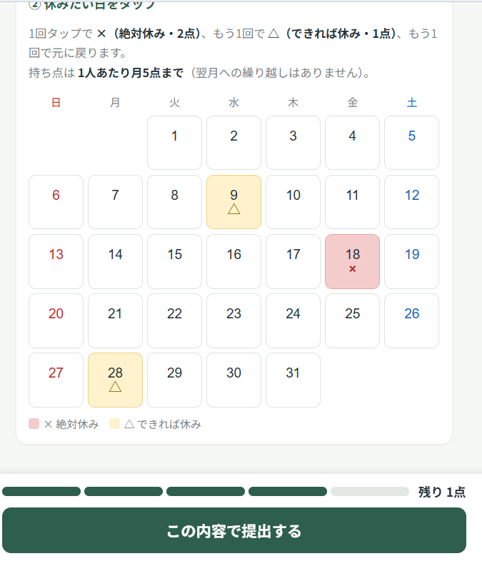
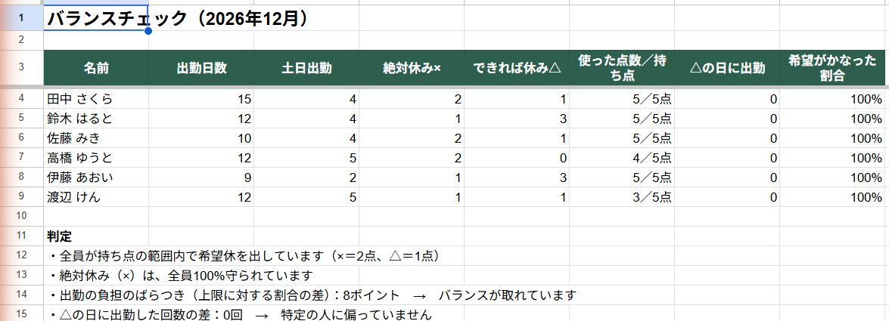
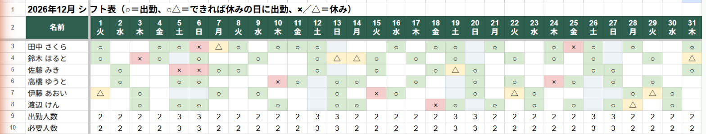

飲食店・小売店・クリニック
シフト自動作成
悩み
シフト作りに毎月時間がかかる。頼みやすい人にばかりシフトが偏り、「希望休を聞いてもらえない」という不満が出る。
できること
- 希望休は持ち点制。1人あたり月5点まで（絶対休み＝2点、できれば休み＝1点、翌月への繰り越しなし）。「言った者勝ち」をなくし、全員が同じ条件で希望を出せる
- スタッフはスマホの提出ページで日付をタップするだけ。残りの点数が見えて、オーバーすると提出できない。提出した内容はシートに自動で入る
- 必要人数・週の上限日数を守って、ボタン1つで自動作成
- 出勤日数・土日出勤・「希望がかなわなかった回数」が偏らないよう割り振り、バランスチェックで見える化
効果
作成の手間を減らし、「偏りなく決めている」根拠を数字でスタッフに示せる。
導入しないと
毎月5時間の調整が続き、「あの人ばかり」という不満もたまっていく。


